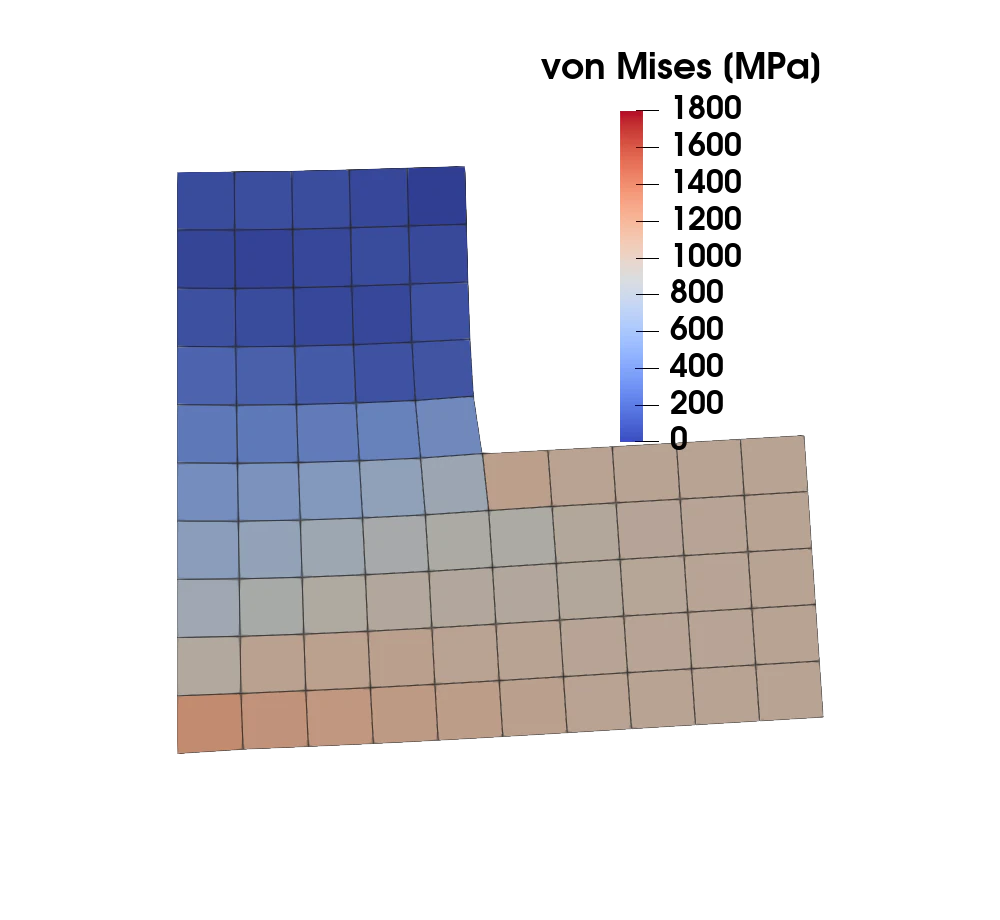
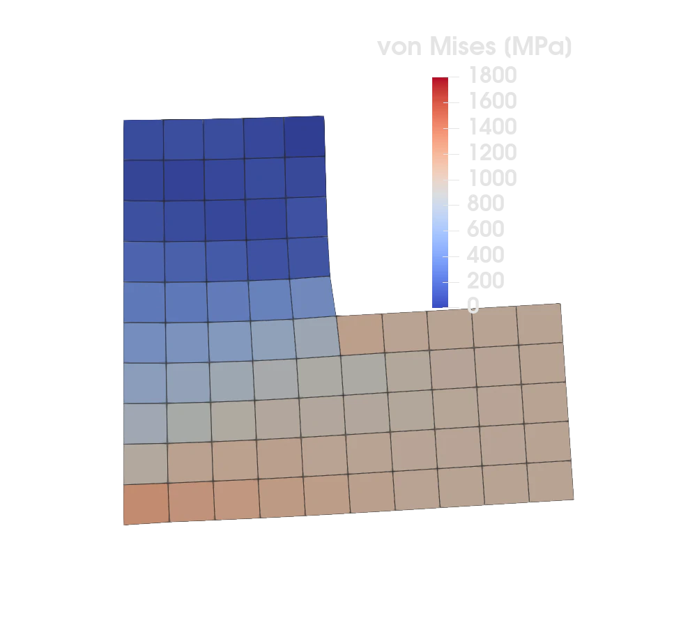

Linear elasticity with adaptive mesh refinement


Figure 1: The adaptive refinement loop, colored by the von Mises stress: the refinement concentrates at the stress singularity of the re-entrant corner (displacements exaggerated).
Introduction
This program demonstrates adaptive mesh refinement (AMR) for 2D linear elasticity using Ferrite's ForestBWG — a p4est-style forest-of-octrees data structure. In contrast to the heat equation AMR tutorial, the mesh here is imported from an Abaqus input file with FerriteMeshParser rather than generated, showing that the adaptive machinery works on arbitrary quadrilateral meshes.
The domain case1.inp is the classic L-shape: the square $[-1,1]^2$ with the upper-right quadrant $[0,1]\times[0,1]$ removed, leaving a re-entrant corner at the origin $(0,0)$. That corner produces a stress singularity when the body is loaded — exactly the kind of localized feature that adaptive refinement resolves efficiently.
We clamp the left edge, pull the (lower) right edge with a horizontal traction, and drive refinement with a facet-jump (Kelly-type) error estimator combined with Dörfler (bulk) marking. Hanging nodes introduced by refinement are made conforming with a ConformityConstraint.
Commented program
First we load the required packages.
using Ferrite, FerriteMeshParser, WriteVTK, DownloadsMesh import
We read the Abaqus mesh with FerriteMeshParser's get_ferrite_grid. The file uses CPS4R (4-node plane-stress quadrilaterals), which are mapped to Ferrite Quadrilateral cells — exactly the cell type required by ForestBWG. The mesh is fetched from the Ferrite asset storage if it is not available locally.
The input file does not define any node or element sets, so we attach the boundary facet sets we need geometrically: the straight left edge $x=-1$ and the straight lower-right edge $x=+1$. These sets are carried through refinement by creategrid, so they remain valid on every adapted mesh.
function setup_grid() gridfile = "case1.inp" isfile(gridfile) || Downloads.download(Ferrite.asset_url(gridfile), gridfile) grid = get_ferrite_grid(gridfile) addfacetset!(grid, "left", x -> x[1] ≈ -1.0) addfacetset!(grid, "right", x -> x[1] ≈ 1.0) return gridendWe wrap the imported grid in a ForestBWG that allows up to 20 levels of refinement. Each original quadrilateral becomes the root of an octree and is subdivided in reference space, with physical coordinates obtained by bilinear interpolation of the original element corners.
base_grid = setup_grid()forest = ForestBWG(base_grid, 20)ForestBWG with
75 cells
75 trees
Material behavior
We use plane-stress linear isotropic elasticity (matching the CPS4R element type). Starting from Young's modulus $E$ and Poisson's ratio $\nu$, the plane-stress stiffness in Voigt form is converted to a 4th-order tensor.
const Emod = 200.0e3 # Young's modulus [MPa]const ν = 0.3 # Poisson's ratio [-]const Cmat = let C_voigt = Emod / (1 - ν^2) * [1.0 ν 0.0; ν 1.0 0.0; 0.0 0.0 (1 - ν) / 2] fromvoigt(SymmetricTensor{4, 2}, C_voigt)endThe applied traction on the right edge (a horizontal pull).
traction(x) = Vec{2}((1.0e3, 0.0))Element assembly
Standard small-strain elasticity stiffness, $k_{ij} = \int_K \nabla N_i : \mathsf{C} : \nabla^\mathrm{sym} N_j \, \mathrm{d}\Omega$.
function assemble_cell!(ke, cellvalues, C) for q_point in 1:getnquadpoints(cellvalues) dΩ = getdetJdV(cellvalues, q_point) for i in 1:getnbasefunctions(cellvalues) ∇Nᵢ = shape_gradient(cellvalues, q_point, i) for j in 1:getnbasefunctions(cellvalues) ∇ˢʸᵐNⱼ = shape_symmetric_gradient(cellvalues, q_point, j) ke[i, j] += (∇Nᵢ ⊡ C ⊡ ∇ˢʸᵐNⱼ) * dΩ end end end return keendGlobal assembly
function assemble_global!(K, dh, cellvalues, C) n_basefuncs = getnbasefunctions(cellvalues) ke = zeros(n_basefuncs, n_basefuncs) assembler = start_assemble(K) for cell in CellIterator(dh) reinit!(cellvalues, cell) fill!(ke, 0.0) assemble_cell!(ke, cellvalues, C) assemble!(assembler, celldofs(cell), ke) end return KendExternal (Neumann) forces
The traction is integrated over the loaded facet set.
function assemble_external_forces!(f_ext, dh, facetset, facetvalues, prescribed_traction) fe_ext = zeros(getnbasefunctions(facetvalues)) for facet in FacetIterator(dh, facetset) reinit!(facetvalues, facet) fill!(fe_ext, 0.0) coords = getcoordinates(facet) for qp in 1:getnquadpoints(facetvalues) x = spatial_coordinate(facetvalues, qp, coords) tₚ = prescribed_traction(x) dΓ = getdetJdV(facetvalues, qp) for i in 1:getnbasefunctions(facetvalues) Nᵢ = shape_value(facetvalues, qp, i) fe_ext[i] += tₚ ⋅ Nᵢ * dΓ end end assemble!(f_ext, celldofs(facet), fe_ext) end return f_extendSolve on a single grid
Given a (non-conforming) grid we set up the FE problem with vector-valued bilinear quadrilateral elements: clamp the left edge, apply the traction on the right edge, and add a ConformityConstraint so the displacement is continuous across hanging nodes.
function solve(grid, C) dim = 2 ip = Lagrange{RefQuadrilateral, 1}()^dim qr = QuadratureRule{RefQuadrilateral}(2) qr_facet = FacetQuadratureRule{RefQuadrilateral}(2) cellvalues = CellValues(qr, ip) facetvalues = FacetValues(qr_facet, ip) dh = DofHandler(grid) add!(dh, :u, ip) close!(dh) ch = ConstraintHandler(dh) add!(ch, Dirichlet(:u, getfacetset(grid, "left"), (x, t) -> zero(Vec{2}))) add!(ch, ConformityConstraint(:u)) close!(ch) K = allocate_matrix(dh, ch) f = zeros(ndofs(dh)) assemble_global!(K, dh, cellvalues, C) assemble_external_forces!(f, dh, getfacetset(grid, "right"), facetvalues, traction) apply!(K, f, ch) u = K \ f apply!(u, ch) return u, dh, cellvaluesendStress post-processing
For visualization we also compute the cell-average von Mises stress (plane stress, i.e. $\sigma_{33} = 0$), which brings out the stress concentration at the re-entrant corner.
function vonmises_stress(grid, dh, u, cv, C) σvM = zeros(getncells(grid)) for cell in CellIterator(dh) reinit!(cv, cell) ue = u[celldofs(cell)] s = 0.0 for qp in 1:getnquadpoints(cv) σ = C ⊡ function_symmetric_gradient(cv, qp, ue) s += sqrt(σ[1, 1]^2 - σ[1, 1] * σ[2, 2] + σ[2, 2]^2 + 3 * σ[1, 2]^2) end σvM[cellid(cell)] = s / getnquadpoints(cv) end return σvMendFacet-jump (Kelly-type) error estimator
A recovery-based (Zienkiewicz-Zhu) estimator is a poor fit here: it assumes flux superconvergence, which fails at the hanging-node interfaces created by octree refinement, so the indicator lights up along refinement fronts and spreads refinement instead of localizing it (the total estimate then grows with each step).
Instead we use a facet-jump (Kelly-type) estimator: the inter-element jump of the normal stress is the natural residual of an elasticity solution and vanishes as the mesh resolves the field. Per cell,
\[ \eta_K^2 = \tfrac{1}{2}\sum_{F \subset \partial K \setminus \partial\Omega} h_F \int_F \|[\![\sigma_h\cdot n]\!]\|^2 \, \mathrm{d}\Gamma + \sum_{F \subset \partial K \cap \Gamma_N} h_F \int_F \|g - \sigma_h\cdot n\|^2 \, \mathrm{d}\Gamma ,\]
where $[\![\sigma_h\cdot n]\!]$ is the traction jump across the interior facet $F$ and the second sum is the boundary residual on the Neumann boundary $\Gamma_N$ with prescribed traction $g$ ($g = 0$ on traction-free surfaces). Facets on the Dirichlet boundary do not contribute.
The jump integrals are evaluated with a single InterfaceValues object: the interface quadrature lives on the (fine) here facet and the there side is evaluated at the same physical points. For a hanging facet the two sides are different geometric facets — the fine subfacet versus the full coarse facet — so the quadrature points cannot be synchronized from a shared vertex set as for conforming interfaces. Instead an AffineInterfaceTransformation is constructed per interface: it encodes how the here facet embeds affinely into the there facet's reference parametrization (which half of it, in 2D) and is passed to reinit! explicitly. This treats conforming, across-tree and hanging (coarse↔fine) facets uniformly, and is exact for the bilinear geometry of the refined forest.
The facet neighbours must be the true faces of the refined forest, including coarse↔fine (hanging) and across-tree faces. ExclusiveTopology only knows the macro (root) mesh and would give a wrong estimator. The adjacency is instead provided by the forest itself: Ferrite.facetskeleton(forest) iterates the leaf faces of every octree (and the shared faces between octrees) and returns one FacetIndex pair per interior facet interface of the refined grid — for a hanging interface the fine subfacet first and the coarse neighbour second, exactly the sides the estimator integrates. Facets of the materialized grid that appear in no pair lie on the domain boundary and carry the boundary residual instead.
function estimate_error(forest, grid, dh, u, C) nc = getncells(grid) cells = getcells(grid) X = [get_node_coordinate(n) for n in getnodes(grid)] ip = Lagrange{RefQuadrilateral, 1}()^2 qr_facet = FacetQuadratureRule{RefQuadrilateral}(2) fv = FacetValues(qr_facet, ip) # boundary residuals iv = InterfaceValues(qr_facet, ip) # interior traction jumps # The interior facet interfaces of the refined forest: conforming pairs and, for # each hanging interface, one (fine subfacet, coarse facet) pair per fine subfacet. skeleton = Ferrite.facetskeleton(forest) error_arr = zeros(nc) # Facet diameter from the facet's node coordinates. function facet_diameter(fi::FacetIndex) fnodes = Ferrite.facets(cells[fi[1]])[fi[2]] return maximum(norm(X[n1] - X[n2]) for n1 in fnodes, n2 in fnodes) end # Squared traction jump over the interface `(fiA, fiB)`, integrated over the `here` # facet `fiA` and split evenly between the two cells. For hanging interfaces `fiA` # is the fine subfacet and `fiB` the coarse facet. function add_jump!(fiA::FacetIndex, fiB::FacetIndex) cA, fA = fiA[1], fiA[2] cB, fB = fiB[1], fiB[2] coordsA = getcoordinates(grid, cA) coordsB = getcoordinates(grid, cB) trans = Ferrite.AffineInterfaceTransformation(cells[cA], coordsA, fA, cells[cB], coordsB, fB) reinit!(iv, cells[cA], coordsA, fA, cells[cB], coordsB, fB, trans) ue = u[vcat(celldofs(dh, cA), celldofs(dh, cB))] hF = facet_diameter(fiA) s = 0.0 for qp in 1:getnquadpoints(iv) n = getnormal(iv, qp) σA = C ⊡ function_symmetric_gradient(iv, qp, ue; here = true) σB = C ⊡ function_symmetric_gradient(iv, qp, ue; here = false) jump = (σA - σB) ⋅ n s += (jump ⋅ jump) * getdetJdV(iv, qp) end contrib = hF * s error_arr[cA] += 0.5 * contrib error_arr[cB] += 0.5 * contrib return nothing end # Boundary residual over the domain-boundary facet `fi` with prescribed traction `g`. function add_boundary!(fi::FacetIndex, g) cA, fA = fi[1], fi[2] coordsA = getcoordinates(grid, cA) reinit!(fv, coordsA, fA) ueA = u[celldofs(dh, cA)] hF = facet_diameter(fi) s = 0.0 for qp in 1:getnquadpoints(fv) x = spatial_coordinate(fv, qp, coordsA) n = getnormal(fv, qp) r = g(x) - (C ⊡ function_symmetric_gradient(fv, qp, ueA)) ⋅ n s += (r ⋅ r) * getdetJdV(fv, qp) end error_arr[cA] += hF * s return nothing end # Interior interfaces: integrate the jump from the (fine) `here` side against the # neighbouring cell, collecting the covered facets along the way. covered = Set{FacetIndex}() for (fiA, fiB) in skeleton push!(covered, fiA) push!(covered, fiB) add_jump!(fiA, fiB) end # Domain-boundary facets are exactly the ones the skeleton does not cover: # Dirichlet facets carry no residual, the Neumann facets the applied traction, # all other boundary facets are traction-free. dirichlet_facets = getfacetset(grid, "left") neumann_facets = getfacetset(grid, "right") zero_traction(x) = zero(Vec{2}) for c in 1:nc, f in 1:Ferrite.nfacets(cells[c]) fi = FacetIndex(c, f) (fi in covered || fi in dirichlet_facets) && continue g = fi in neumann_facets ? traction : zero_traction add_boundary!(fi, g) end return error_arrendDörfler marking
Sort cells by decreasing error and mark the smallest set whose cumulative error accounts for a fraction $\theta$ of the total.
function dorfler_mark(error_arr, θ) cells_to_refine = Int[] sizehint!(cells_to_refine, length(error_arr)) total = sum(error_arr) total > 0 || return cells_to_refine, total perm = sortperm(error_arr; rev = true) target = θ * total acc = 0.0 for idx in perm push!(cells_to_refine, idx) acc += error_arr[idx] acc >= target && break end return cells_to_refine, totalendAdaptive solve loop
Repeat: materialize the forest, solve, estimate, mark, refine, and enforce 2:1 balance. nsteps is kept comfortably below b for the CI, where b — the second argument to ForestBWG (here 20) — is the maximum refinement level of the forest.
function solve_adaptive(initial_forest; nsteps = 4, θ = 0.3) forest = deepcopy(initial_forest) pvd = paraview_collection("elasticity_amr") for i in 1:nsteps # Materialize the forest into a NonConformingGrid and solve. grid = creategrid(forest) u, dh, cv = solve(grid, Cmat) # Estimate the error and mark cells with Dörfler marking. error_arr = estimate_error(forest, grid, dh, u, Cmat) cells_to_refine, total = dorfler_mark(error_arr, θ) @info "AMR step $i: $(getncells(grid)) cells, $(length(cells_to_refine)) marked, total error = $total" # Export displacement, von Mises stress and the cell-wise error indicator. VTKGridFile("elasticity_amr-$i", dh) do vtk write_solution(vtk, dh, u) write_cell_data(vtk, vonmises_stress(grid, dh, u, cv, Cmat), "von Mises [MPa]") write_cell_data(vtk, error_arr, "error indicator") pvd[i] = vtk end isempty(cells_to_refine) && break # Refine the marked cells and restore 2:1 balance across the forest. refine!(forest, cells_to_refine) balanceforest!(forest) end vtk_save(pvd) return forestendRun
solve_adaptive(forest);[ Info: AMR step 1: 75 cells, 2 marked, total error = 43590.00478851588
[ Info: AMR step 2: 81 cells, 3 marked, total error = 34038.96265623566
[ Info: AMR step 3: 90 cells, 5 marked, total error = 27271.342745395046
[ Info: AMR step 4: 105 cells, 9 marked, total error = 21832.082182011894This page was generated using Literate.jl.